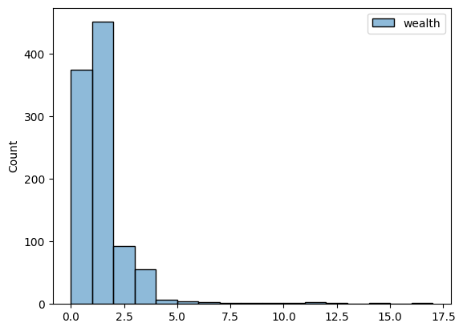

[6]:
import datetime as dt
import random
import numpy as np
import seaborn as sns
import pop2net as p2n
from pop2net.data_fakers.soep import soep_faker
from pop2net.pop_maker import PopMaker
[7]:
class Agent(p2n.Agent):
def __init__(self, model, *args, **kwargs) -> None:
super().__init__(model, *args, **kwargs)
self.wealth = 1
def wealth_transfer(self):
if self.wealth > 0:
if len(self.neighbors()) > 0:
partner = random.choice(self.neighbors())
partner.wealth += 1
self.wealth -= 1
class Home(p2n.Location):
def group(self, agent):
return agent.hid
class School(p2n.Location):
def group(self, agent) -> object:
return agent.age
def join(self, agent) -> object:
return 5 < agent.age < 20
def gini(x):
"""Calculate Gini Coefficient"""
# By Warren Weckesser https://stackoverflow.com/a/39513799
x = np.array(x)
mad = np.abs(np.subtract.outer(x, x)).mean() # Mean absolute difference
rmad = mad / np.mean(x) # Relative mean absolute difference
return 0.5 * rmad
class Model(p2n.Model):
def setup(self):
self.date = dt.date(2022, 1, 1)
df_soep = soep_faker.soep(size=self.p.n_agents)
self.pop_maker = PopMaker(model=self)
self.agents, self.locations = self.pop_maker.make(
df=df_soep,
agent_class=Agent,
location_classes=[Home, School],
)
def step(self):
self.agents.wealth_transfer()
def update(self):
self.record("Gini Coefficient", gini(self.agents.wealth))
def end(self):
self.agents.record("wealth")
[8]:
parameters = {
"n_agents": 1000,
"steps": 100,
"seed": 42,
}
model = Model(parameters)
results = model.run()
Completed: 100 steps
Run time: 0:00:01.567968
Simulation finished
[9]:
sns.histplot(
data=results.variables.Agent,
binwidth=1,
)
[9]:
<Axes: ylabel='Count'>
